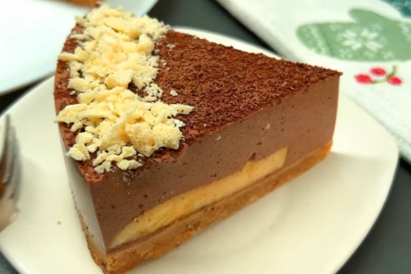

Торт без випічки
Торт без випічки – цей рецепт зараз актуальний як ніколи. До того ж приготувати його можна всього з трьох інгредієнтів і досить швидко. Яким він буде на смак? Дещо схожим на чизкейк.
_____________________
Вершковий сир — 450 г
Шоколад — 340 г
Вершки (10%) — 80 г